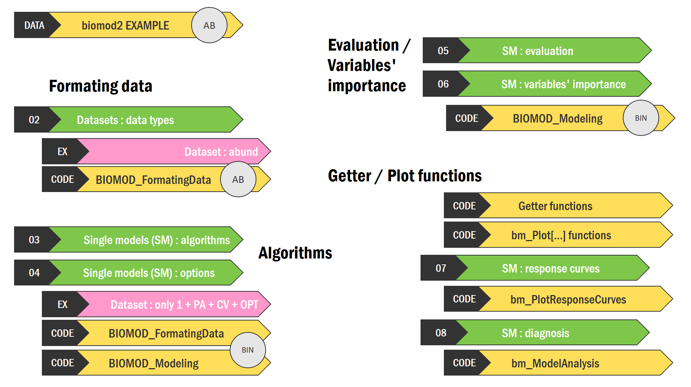
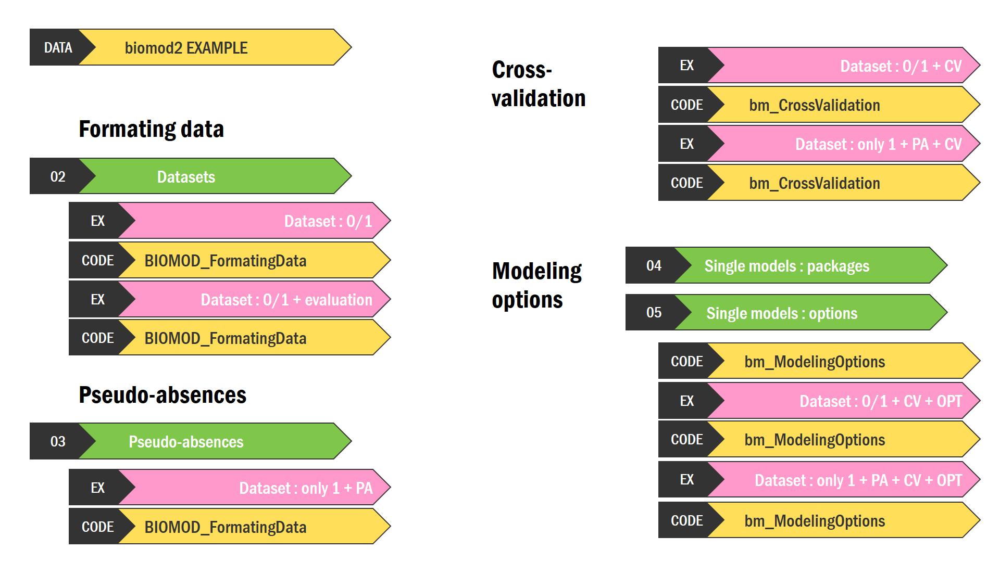

Chapters can be directly accessed to through time stamps in the video description on YouTube.

| Chapter | Theme | Timestamp |
|---|---|---|
| Evolution through time | 0:00 | |
| 01. Functions hierarchy | 1:00 | |
| DATA. biomod2 example (BIN / AB) | 1:32 | |
| FORMATING DATA | 2:33 | |
| 02. Datasets : data types | 3:19 | |
| Dataset : abund | 4:38 | |
| ALGORITHMS | 5:49 | |
| 03. Single models : algorithms | 6:51 | |
| 04. Single models : options | 9:00 | |
| Dataset : only 1 + PA + CV + OPT (BIN) | 10:28 | |
| EVALUATION / VARIABLES’ IMPORTANCE | 05. Single models : evaluation | 15:10 |
| 06. Single models : variables’ importance | 19:38 | |
| Code : BIOMOD_Modeling(BIN) | 22:38 | |
| GETTER / PLOT FUNCTIONS | 23:41 | |
| Code : Getter functions | 24:49 | |
| Code : Plot functions | 29:09 | |
| 07. Single models : response curves | 32:47 | |
| 08. Single models : diagnosis | 36:43 |

| Chapter | Theme | Timestamp |
|---|---|---|
| Introduction to the package | 0:00 | |
| 01. Functions hierarchy | 2:28 | |
| DATA. biomod2 example | 3:54 | |
| FORMATING DATA | 02. Datasets | 4:14 |
| Dataset : 0/1 | 7:07 | |
| Dataset : 0/1 + evaluation | 8:21 | |
| PSEUDO-ABSENCES | 9:08 | |
| 03. Pseudo-absences | 9:39 | |
| Dataset : only 1 + PA | 13:05 | |
| CROSS-VALIDATION | Dataset : 0/1 + CV | 16:35 |
| Dataset : only 1 + PA + CV | 18:39 | |
| MODELING OPTIONS | 04. Single models : packages | 19:49 |
| 05. Single models : options | 20:26 | |
| Dataset : 0/1 + CV + OPT | 24:48 | |
| Dataset : only 1 + PA + CV + OPT | 26:40 |